library(tidyr)
library(dplyr)
library(furrr)
library(parameters)
library(lavaan)
library(dagitty)
library(ggdag)
# set up parallelization
plan(multisession)17 Weird causality and selection effects ✎ Rough draft
17.1 Weird causality: Does regression assume causality?
What does ‘assume’ mean here? What would violating it mean?
17.1.1 Plots
17.1.1.1 Data generating process
\(x\) causes \(y\) (y ~ x):

17.1.1.2 Analysis models
\(x\) causes \(y\) (y ~ x):

\(y\) causes \(x\) (x ~ y):
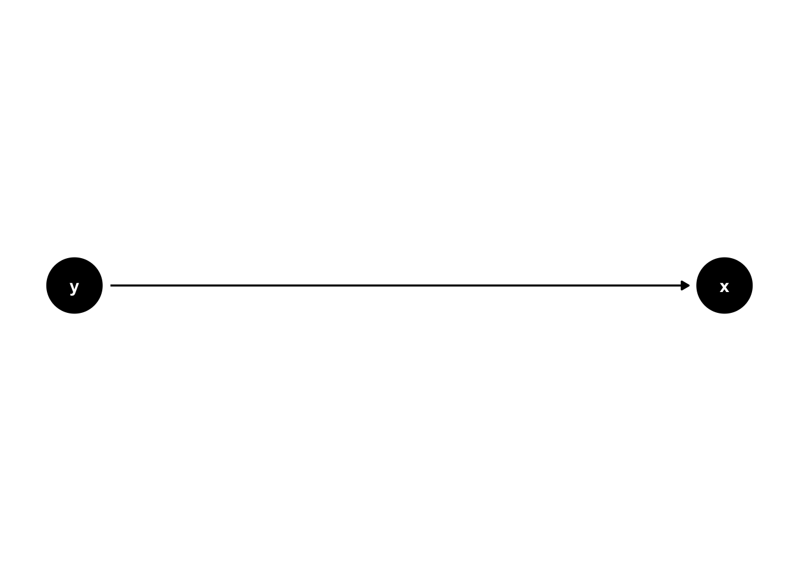
17.1.2 Simulate
# functions
generate_data <- function(n, population_model) {
data <- lavaan::simulateData(model = population_model, sample.nobs = n)
return(data)
}
analyse <- function(data, model) {
# specify and fit model
fit <- sem(model = model, data = data)
# extract regression beta estimates
results <- parameters::model_parameters(fit, standardize = FALSE) |>
#filter(To == "y" & From == "x") |> # this corresponds to the Y ~ X effect
select(predicted = To,
predictor = From,
beta = Coefficient,
ci_lower = CI_low,
ci_upper = CI_high,
p)
return(results)
}
# experiment
experiment_parameters_grid <- expand_grid(
n = 200,
population_model = "y ~ 1.2*x",
analyse_model = c("y ~ x",
"x ~ y"),
iteration = 1:1000
)
# run simulation
set.seed(42)
simulation <-
experiment_parameters_grid |>
mutate(generated_data = future_pmap(.l = list(n = n,
population_model = population_model),
.f = generate_data,
.progress = TRUE,
.options = furrr_options(seed = TRUE))) |>
mutate(results = future_pmap(.l = list(data = generated_data,
model = analyse_model),
.f = analyse,
.progress = TRUE,
.options = furrr_options(seed = TRUE)))
# summarize results
simulation_summary <- simulation |>
unnest(results) |>
group_by(n,
population_model,
analyse_model) |>
summarize(mean_beta = mean(beta),
proportion_signficiant = mean(p < .05))
simulation_summary |>
mutate_if(is.numeric, janitor::round_half_up, digits = 2)| n | population_model | analyse_model | mean_beta | proportion_signficiant |
|---|---|---|---|---|
| 200 | y ~ 1.2*x | x ~ y | 0.49 | 1 |
| 200 | y ~ 1.2*x | y ~ x | 1.20 | 1 |
- So, does regression assume causality? Think in terms of parameter recovery.
17.2 Weird selection effects: Placebo effect as selection artifact
Note that the below does not model all forms of placebo effect; only the quantification of the placebo effect (e.g., without a no-intervention comparison arm); see Hróbjartsson & Gøtzsche (2001, 2010) who even under those proper conditions show no evidence for placebo effects except for subjective measures and even then small effects.
17.2.1 Plots
17.2.1.1 Raincloud plots
library(ggrain)
library(faux)
set.seed(42)
n_participants <- 200
true_mean <- 15
total_sd <- 8
reliability <- 0.65 # cor(timepoint_1, timepoint_2)
data_all_participants <- faux::rnorm_multi(
n = n_participants,
mu = true_mean,
sd = total_sd,
r = reliability,
varnames = c("timepoint_1", "timepoint_2")
) |>
mutate(
unique_id = seq_len(n_participants),
across(starts_with("timepoint_"), round)
) |>
pivot_longer(
cols = starts_with("timepoint_"),
names_to = "timepoint",
names_prefix = "timepoint_",
values_to = "score"
) |>
mutate(timepoint = as.integer(timepoint)) |>
filter(score >= 0)
# Plot 1: full sample, no selection
p1 <- ggplot(data_all_participants, aes(as.factor(timepoint), score, fill = as.factor(timepoint))) +
geom_rain(alpha = .5,
adjust = 1.5,
rain.side = 'f1x1',
id.long.var = "unique_id",
likert = TRUE,
boxplot.args = list(color = NA, fill = NA, outlier.shape = NA, width = 0)) +
stat_summary(data = ~ filter(.x, timepoint == 1),
fun.data = mean_cl_normal,
geom = "pointrange",
color = "darkred",
position = position_nudge(x = -0.1)) +
stat_summary(data = ~ filter(.x, timepoint == 2),
fun.data = mean_cl_normal,
geom = "pointrange",
color = "darkred",
position = position_nudge(x = 0.1)) +
theme_classic() +
scale_fill_manual(values = c("dodgerblue", "darkorange")) +
guides(fill = 'none', color = 'none') +
ylab("Score") +
xlab("Time point") +
scale_y_continuous(breaks = scales::breaks_pretty(n = 6),
limits = c(0, 50))
p1
t.test(score ~ timepoint,
data = data_all_participants) |>
parameters::model_parameters()| Parameter | Group | Mean_Group1 | Mean_Group2 | Difference | CI | CI_low | CI_high | t | df_error | p | Method | Alternative |
|---|---|---|---|---|---|---|---|---|---|---|---|---|
| score | timepoint | 15.22 | 15.16 | 0.06 | 0.95 | -1.4 | 1.51 | 0.08 | 388.82 | 0.9375175 | Welch Two Sample t-test | two.sided |
# Plot 2: enrolled at baseline only
enrolled_ids <- data_all_participants |>
filter(timepoint == 1, score >= 25) |>
pull(unique_id)
data_recruited_participants <- data_all_participants |>
filter(unique_id %in% enrolled_ids)
ggplot(data_recruited_participants, aes(as.factor(timepoint), score, fill = as.factor(timepoint))) +
geom_rain(alpha = .5,
adjust = 1.5,
rain.side = 'f1x1',
id.long.var = "unique_id",
likert = TRUE,
boxplot.args = list(color = NA, fill = NA, outlier.shape = NA, width = 0)) +
stat_summary(data = ~ filter(.x, timepoint == 1),
fun.data = mean_cl_normal,
geom = "pointrange",
color = "darkred",
position = position_nudge(x = -0.1)) +
stat_summary(data = ~ filter(.x, timepoint == 2),
fun.data = mean_cl_normal,
geom = "pointrange",
color = "darkred",
position = position_nudge(x = 0.1)) +
theme_classic() +
scale_fill_manual(values = c("dodgerblue", "darkorange")) +
guides(fill = 'none', color = 'none') +
ylab("Score") +
xlab("Time point") +
scale_y_continuous(breaks = scales::breaks_pretty(n = 6),
limits = c(0, 50))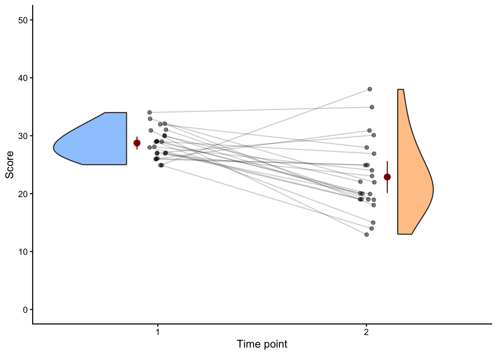
t.test(score ~ timepoint,
data = data_recruited_participants) |>
parameters::model_parameters()| Parameter | Group | Mean_Group1 | Mean_Group2 | Difference | CI | CI_low | CI_high | t | df_error | p | Method | Alternative |
|---|---|---|---|---|---|---|---|---|---|---|---|---|
| score | timepoint | 28.74 | 22.87 | 5.87 | 0.95 | 2.94 | 8.8 | 4.1 | 28.92 | 0.0003093 | Welch Two Sample t-test | two.sided |
17.2.1.2 Scatter plots
enrolled_ids_temp <- data_all_participants |>
filter(timepoint == 1, score >= 25) |>
mutate(enrolled = TRUE) |>
select(-timepoint, -score)
temp <- data_all_participants |>
left_join(enrolled_ids_temp, by = "unique_id") |>
mutate(enrolled = if_else(is.na(enrolled), FALSE, enrolled),
enrolled_alpha = if_else(enrolled, .7, .2),
enrolled_alpha_line = if_else(enrolled, .5, .2),)
ggplot(temp, aes(as.factor(timepoint), score, group = unique_id)) +
geom_point(aes(alpha = 0.8),
position = position_jitter(width = 0.1, seed = 42)) +
geom_line(aes(alpha = 0.6),
position = position_jitter(width = 0.1, seed = 42)) +
scale_y_continuous(name = "Score",
breaks = scales::breaks_pretty(n = 6),
limits = c(0, 50)) +
theme_linedraw() +
theme(legend.position = "none")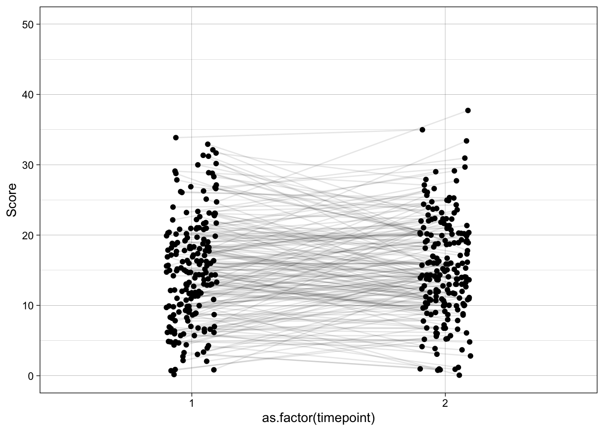
temp |>
filter(timepoint == 1) |>
ggplot(aes(as.factor(timepoint), score, group = unique_id)) +
geom_point(aes(alpha = 0.8),
position = position_jitter(width = 0.1, seed = 42)) +
geom_line(aes(alpha = 0.6),
position = position_jitter(width = 0.1, seed = 42)) +
scale_x_discrete(limits = c("1", "2")) +
scale_y_continuous(name = "Score",
breaks = scales::breaks_pretty(n = 6),
limits = c(0, 50)) +
theme_linedraw() +
theme(legend.position = "none")
temp |>
filter(timepoint == 1) |>
ggplot(aes(as.factor(timepoint), score, group = unique_id)) +
geom_point(aes(alpha = as.factor(enrolled_alpha)),
position = position_jitter(width = 0.1, seed = 42)) +
geom_line(aes(alpha = as.factor(enrolled_alpha_line)),
position = position_jitter(width = 0.1, seed = 42)) +
scale_x_discrete(limits = c("1", "2")) +
scale_y_continuous(name = "Score",
breaks = scales::breaks_pretty(n = 6),
limits = c(0, 50)) +
theme_linedraw() +
theme(legend.position = "none")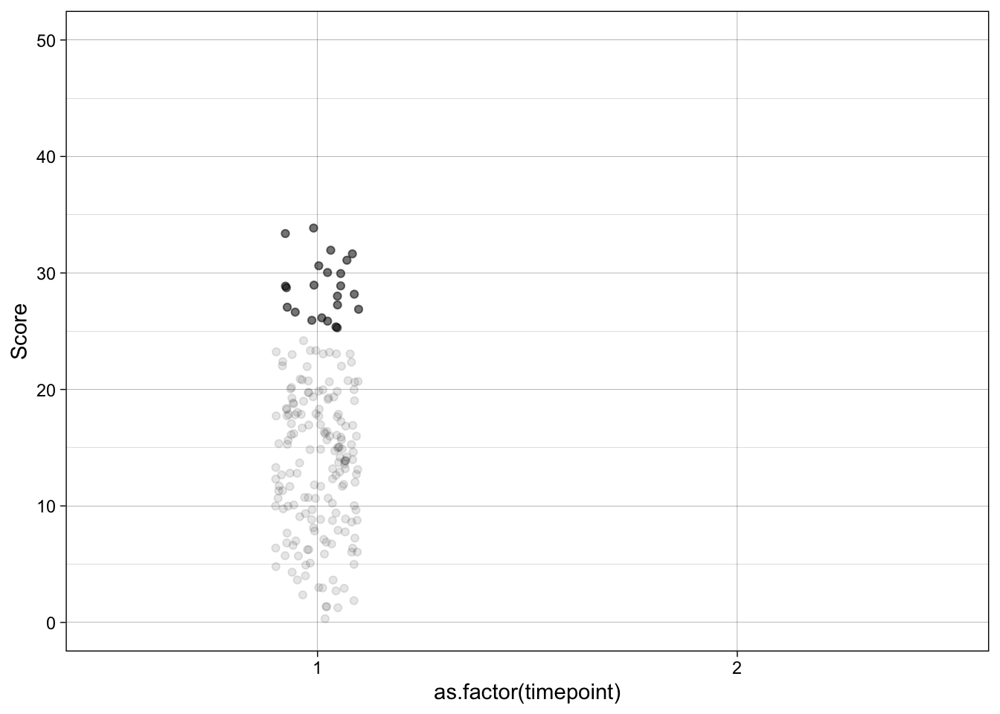
ggplot(temp, aes(as.factor(timepoint), score, group = unique_id)) +
geom_point(aes(alpha = enrolled_alpha),
position = position_jitter(width = 0.1, seed = 42)) +
geom_line(aes(alpha = enrolled_alpha_line),
position = position_jitter(width = 0.1, seed = 42)) +
scale_y_continuous(name = "Score",
breaks = scales::breaks_pretty(n = 6),
limits = c(0, 50)) +
theme_linedraw() +
theme(legend.position = "none")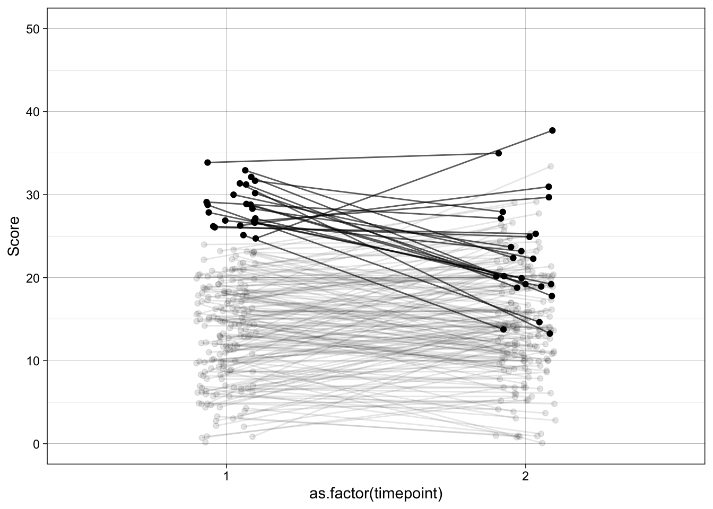
temp |>
filter(enrolled == TRUE) |>
ggplot(aes(as.factor(timepoint), score, group = unique_id)) +
geom_point(aes(alpha = enrolled_alpha),
position = position_jitter(width = 0.1, seed = 42)) +
geom_line(aes(alpha = enrolled_alpha_line),
position = position_jitter(width = 0.1, seed = 42)) +
scale_y_continuous(name = "Score",
breaks = scales::breaks_pretty(n = 6),
limits = c(0, 50)) +
theme_linedraw() +
theme(legend.position = "none")
t.test(score ~ timepoint,
data = temp |> filter(enrolled == TRUE)) |>
parameters::model_parameters()| Parameter | Group | Mean_Group1 | Mean_Group2 | Difference | CI | CI_low | CI_high | t | df_error | p | Method | Alternative |
|---|---|---|---|---|---|---|---|---|---|---|---|---|
| score | timepoint | 28.74 | 22.87 | 5.87 | 0.95 | 2.94 | 8.8 | 4.1 | 28.92 | 0.0003093 | Welch Two Sample t-test | two.sided |
17.2.2 Data generating process

{ stable_severity }
{ symptom_pre }
{ enrolled }The naive pre–post comparison in the enrolled sample picks up more than any true placebo effect because there is an open non-causal path from placebo to symptom_post:
placebo ← enrolled ← symptom_pre ← stable_severity → symptom_post
Note that this DAG contains no collider — a collider would require two arrowheads meeting at the same node (e.g. A → C ← B), and no node here has more than one incoming arrow. What the path does contain is:
- Chain links at
enrolledandsymptom_pre: the arrows pass through these nodes in the same direction (... ← symptom_pre ← stable_severity). - A fork at
stable_severity: it is the common cause of bothsymptom_preandsymptom_post(symptom_pre ← stable_severity → symptom_post), so it confounds any pre–post comparison.
The path is open by default — selecting on high symptom_pre (enrolment) pulls in people whose stable_severity is also above average, and that same stable_severity drives symptom_post. Their symptom_post therefore looks closer to the population mean than their symptom_pre did — the classic regression-to-the-mean pattern that the naive analysis mislabels as a placebo effect.
Because every node on the path is a chain or fork (none are colliders), conditioning on any one of them blocks the path. ANCOVA does this by conditioning on symptom_pre.
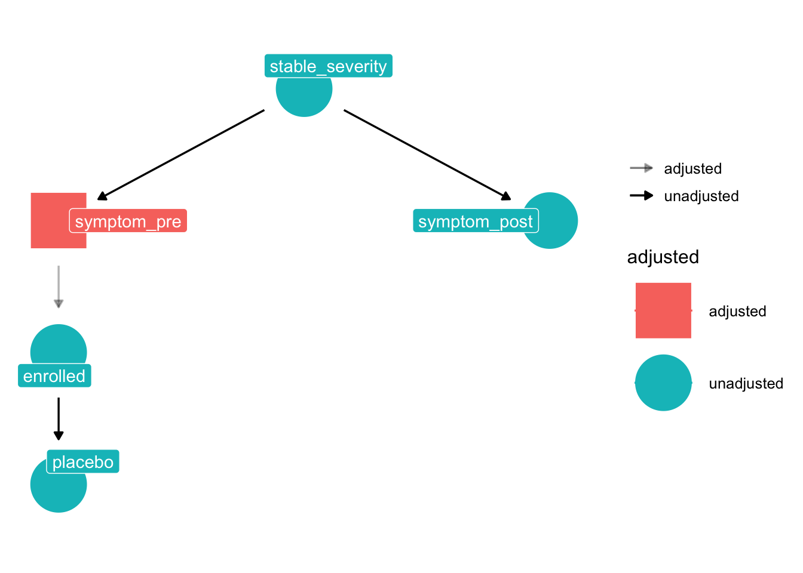
17.2.3 Analysis models
Naive within-arm change (change_score ~ 1): mean pre–post difference in the enrolled sample, attributing all change to placebo.
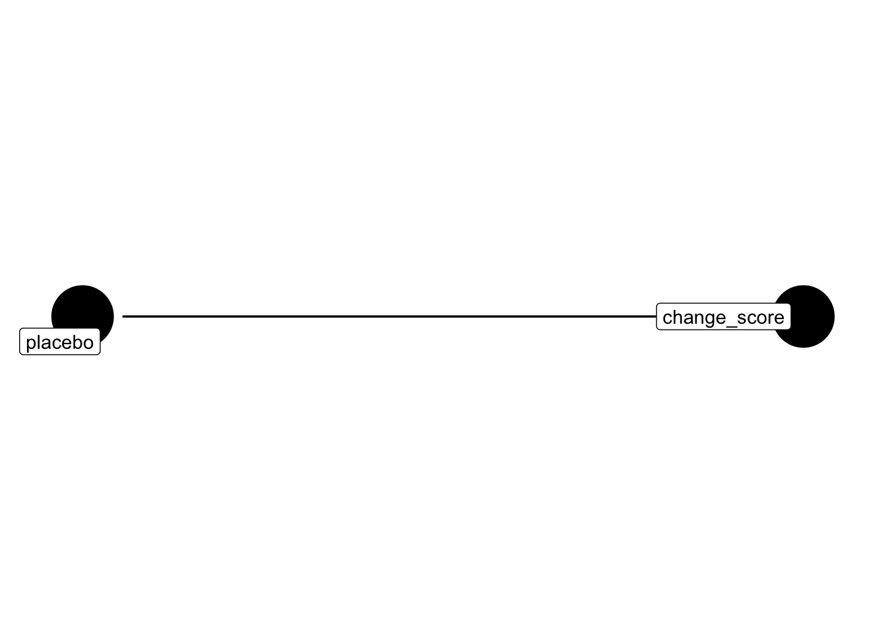
ANCOVA on change (change_score ~ symptom_pre): intercept recovers the placebo effect after partialling out the regression-to-mean component attributable to initial severity.

17.2.4 Simulate
TODO change the counterfactual - the 0 condition has the wrong analytic model i think
pop_model_placebo <- "
stable_severity =~ 1*symptom_pre + 1*symptom_post
symptom_pre ~~ 0.4*symptom_pre
symptom_post ~~ 0.4*symptom_post
stable_severity ~~ 0.6*stable_severity
symptom_pre ~ 0*1
symptom_post ~ 0*1
stable_severity ~ 0*1
"
generate_data <- function(n, population_model, enroll_threshold = 1) {
pool <- simulateData(population_model, sample.nobs = n * 20)
enrolled <- pool[pool$symptom_pre > enroll_threshold, ]
enrolled[sample(nrow(enrolled), min(n, nrow(enrolled))), ]
}
analyse <- function(data, model) {
fit <- sem(model = model, data = data)
parameterEstimates(fit) |>
filter(label == "placebo_effect") |>
transmute(predicted = "symptom_post",
predictor = "intercept",
beta = est,
ci_lower = ci.lower,
ci_upper = ci.upper,
p = pvalue)
}
experiment_parameters_grid <- expand_grid(
n = 200,
population_model = pop_model_placebo,
analysis_model = c(
# naive: two intercepts, placebo_effect = mean_post - mean_pre
"symptom_pre ~ pre_mean*1
symptom_post ~ post_mean*1
placebo_effect := post_mean - pre_mean",
# ANCOVA: intercept of symptom_post controlling for symptom_pre
"symptom_post ~ placebo_effect*1 + symptom_pre"
),
iteration = 1:1000
)
# run simulation
set.seed(42)
simulation <-
experiment_parameters_grid |>
mutate(generated_data = future_pmap(.l = list(n = n,
population_model = population_model),
.f = generate_data,
.progress = TRUE,
.options = furrr_options(seed = TRUE))) |>
mutate(results = future_pmap(.l = list(data = generated_data,
model = analysis_model),
.f = analyse,
.progress = TRUE,
.options = furrr_options(seed = TRUE)))
# summarize results
simulation_summary <- simulation |>
unnest(results) |>
group_by(n,
population_model,
analysis_model) |>
summarize(mean_beta = mean(beta),
proportion_significant = mean(p < .05))
simulation_summary |>
mutate_if(is.numeric, janitor::round_half_up, digits = 2)| n | population_model | analysis_model | mean_beta | proportion_significant |
|---|---|---|---|---|
| 200 | stable_severity =~ 1symptom_pre + 1symptom_post |
symptom_pre ~~ 0.4symptom_pre symptom_post ~~ 0.4symptom_post stable_severity ~~ 0.6stable_severity symptom_pre ~ 01 symptom_post ~ 01 stable_severity ~ 01 |symptom_post ~ placebo_effect1 + symptom_pre | 0.00| 0.05| | 200|stable_severity =~ 1symptom_pre + 1symptom_post symptom_pre ~~ 0.4symptom_pre symptom_post ~~ 0.4symptom_post stable_severity ~~ 0.6stable_severity symptom_pre ~ 01 symptom_post ~ 01 stable_severity ~ 01 |symptom_pre ~ pre_mean1 symptom_post ~ post_mean*1 placebo_effect := post_mean - pre_mean | -0.61| 1.00|
The naive model is both wrong and confident. ANCOVA recovers zero because conditioning on symptom_pre makes symptom_post conditionally independent of enrollment — the selection was entirely through symptom_pre, so controlling for it closes the spurious path.
- notes to self: instead of being used to just demonstrate selection effects, this could be used for the lesson on the appropriate analysis of RCT data, why pre post change isn’t valid, and why ANCOVA is more appropriate than change scores etc.
17.2.5 RCT with randomisation to intervention
The placebo DAG above has enrolled → placebo: every enrolled participant gets the same (placebo) “treatment”, so the treatment indicator is a deterministic function of selection. In a randomised controlled trial the treatment indicator (condition) is instead set by a coin flip after enrolment, so it has no parents in the DAG. That single structural change is what makes the RCT estimable.
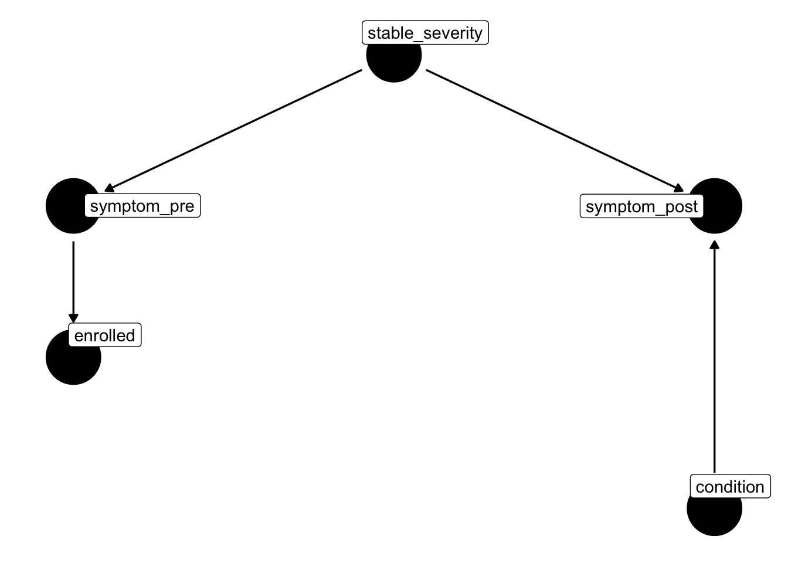
Compared to the placebo DAG:
- The arrow
enrolled → placebois removed.conditionhas no incoming arrows because it is randomised — nothing in the system causes it. - A new arrow
condition → symptom_postis added. This is the causal treatment effect we want to estimate. stable_severity → symptom_pre → enrolledis unchanged: the trial can still recruit on baseline severity, but that no longer threatens identification of the treatment effect (see below).
17.2.5.1 Why symptom_post ~ symptom_pre + condition works
Trace the paths from condition to symptom_post:
- Direct causal path:
condition → symptom_post. This is the effect we want. - Any backdoor path? A backdoor would have to start with an arrow into
condition. There are none, so no backdoor paths exist.
Because randomisation severs all backdoor paths, the coefficient on condition in symptom_post ~ condition is already an unbiased estimate of the treatment effect. Adding symptom_pre does not change what is being estimated — it changes the precision of the estimate:
symptom_preis strongly correlated withsymptom_postthrough their shared causestable_severity(the fork). Including it as a covariate explains a large chunk of variance insymptom_postthat would otherwise live in the residual.- A smaller residual variance shrinks the standard error on the
conditioncoefficient, giving a more powerful test of the treatment effect. - It also corrects for any chance imbalance in baseline severity between arms in a finite sample.
Contrast this with the simple change-score analysis (symptom_post − symptom_pre ~ condition): that model implicitly fixes the coefficient on symptom_pre at exactly 1, whereas ANCOVA lets the data choose it. When the pre–post correlation is less than 1 (which it always is, due to measurement error and state noise), ANCOVA is strictly more efficient and is the standard recommended analysis for randomised trials.
# Minimal adjustment sets to identify the total causal effect of X on Y [should be empty - no controls needed]
dagitty::adjustmentSets(dag_rct, exposure = "condition", outcome = "symptom_post") {}# Non minimal adjustment sets to identify the total causal effect of X on Y
dagitty::adjustmentSets(dag_rct,
exposure = "condition",
outcome = "symptom_post",
type = "all") {}
{ enrolled }
{ stable_severity }
{ enrolled, stable_severity }
{ symptom_pre }
{ enrolled, symptom_pre }
{ stable_severity, symptom_pre }
{ enrolled, stable_severity, symptom_pre }# Visualise the adjustment set on the DAG
ggdag::ggdag_adjustment_set(dag_rct, exposure = "condition", outcome = "symptom_post")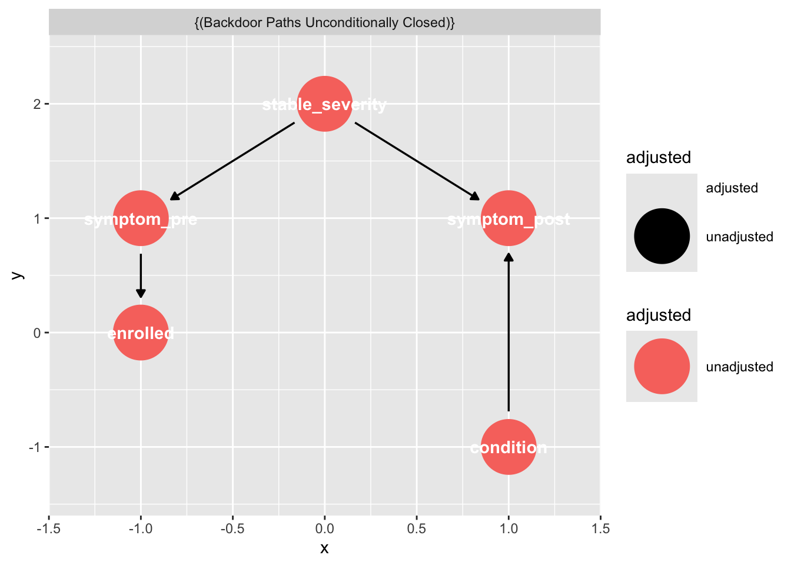
# All paths between two nodes (causal + backdoor)
dagitty::paths(dag_rct, from = "condition", to = "symptom_post")$paths
[1] "condition -> symptom_post"
$open
[1] TRUE# Testable implications of the DAG (conditional independencies you can check empirically)
dagitty::impliedConditionalIndependencies(dag_rct)cndt _||_ enrl
cndt _||_ stb_
cndt _||_ sym_
enrl _||_ stb_ | sym_
enrl _||_ sym_ | stb_
enrl _||_ symptm_ps | symptm_pr
symptm_ps _||_ symptm_pr | stb_# Equivalence class — other DAGs that imply the same independencies
dagitty::equivalentDAGs(dag_rct)[[1]]
dag {
condition [pos="1.000,-1.000"]
enrolled [pos="-1.000,0.000"]
stable_severity [pos="0.000,2.000"]
symptom_post [pos="1.000,1.000"]
symptom_pre [pos="-1.000,1.000"]
condition -> symptom_post
stable_severity -> symptom_post
stable_severity -> symptom_pre
symptom_pre -> enrolled
}
[[2]]
dag {
condition [pos="1.000,-1.000"]
enrolled [pos="-1.000,0.000"]
stable_severity [pos="0.000,2.000"]
symptom_post [pos="1.000,1.000"]
symptom_pre [pos="-1.000,1.000"]
condition -> symptom_post
stable_severity -> symptom_post
symptom_pre -> enrolled
symptom_pre -> stable_severity
}
[[3]]
dag {
condition [pos="1.000,-1.000"]
enrolled [pos="-1.000,0.000"]
stable_severity [pos="0.000,2.000"]
symptom_post [pos="1.000,1.000"]
symptom_pre [pos="-1.000,1.000"]
condition -> symptom_post
enrolled -> symptom_pre
stable_severity -> symptom_post
symptom_pre -> stable_severity
}17.2.6 A correct analysis of the placebo effect
randomisation to remove the enrollment -> placebo path, plus a placebo -> symptoms_post path
17.3 Weird causality+selection effects: Collider bias
Collider bias is a great example of a scientific error that has the ‘holy trinity’ of problematic features: it is boring, complicated, and consequential.
One you understand collider biases, you will spot people making this error all around you in the research literature.
Collider biases are replicable/robust in that they can be shown over and over again. They are ‘true’ in the sense that the numbers represent that the results reported in articles for them are correctly reported from the statistical analyses, and repeating the study will likely produce the same result.
But they are incorrect/false/erroneous in that the conclusions we reach from them are wrong. They are the product of asking the wrong question and coming to the wrong answer. They are a robust ‘statistical artifact’ rather than a description of the world around us.
Let’s start with an abstract explanation of collider bias to prove that it happens, and then give concrete examples of conclusions in the literature that are incorrect and represent statistical artifacts.
The key question to ask to avoid collider biases is often “what have I preselected my sample for?”
17.3.1 Data generating process

17.3.2 Analysis models
\(c\) is caused by both \(x\) and \(y\) (C ~ 0.5*X; C ~ 0.5*Y):

\(y\) is caused by both \(x\) and \(c\) (y ~ x; y ~ c):
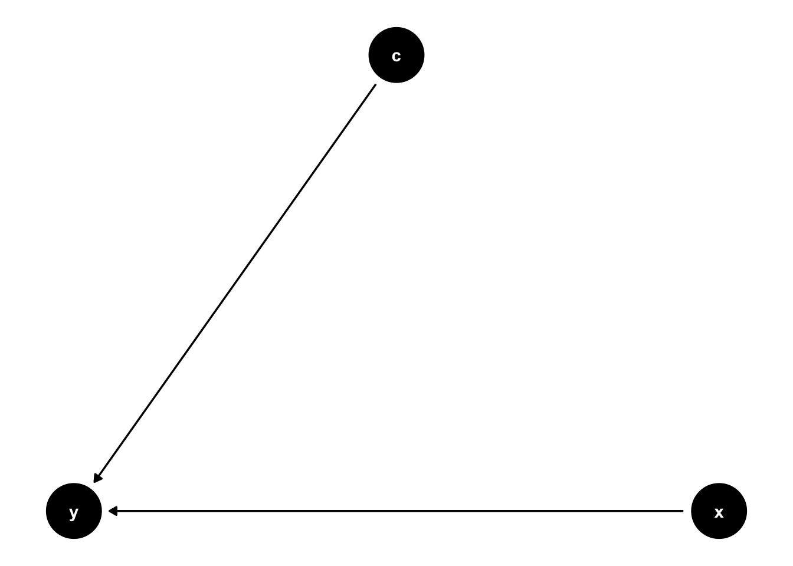
17.3.3 Simulate
# functions
generate_data <- function(n, population_model) {
data <- lavaan::simulateData(model = population_model, sample.nobs = n)
return(data)
}
analyse <- function(data, model) {
# specify and fit model
fit <- sem(model = model, data = data)
# extract regression beta estimates
results <- parameters::model_parameters(fit, standardize = FALSE) |>
#filter(To == "y" & From == "x") |> # this corresponds to the Y ~ X effect
select(predicted = To,
predictor = From,
beta = Coefficient,
ci_lower = CI_low,
ci_upper = CI_high,
p)
return(results)
}
# experiment
experiment_parameters_grid <- expand_grid(
n = 200,
population_model = "c ~ 1.2*x + 1.2*y",
analysis_model = c("c ~ x + y",
"y ~ x + c"),
iteration = 1:1000
)
# run simulation
set.seed(42)
simulation <-
experiment_parameters_grid |>
mutate(generated_data = future_pmap(.l = list(n = n,
population_model = population_model),
.f = generate_data,
.progress = TRUE,
.options = furrr_options(seed = TRUE))) |>
mutate(results = future_pmap(.l = list(data = generated_data,
model = analysis_model),
.f = analyse,
.progress = TRUE,
.options = furrr_options(seed = TRUE)))
# summarize results
simulation_summary <- simulation |>
unnest(results) |>
# extract only the beta parameters of interest
filter((predicted == "x" & predictor == "y") | (predicted == "y" & predictor == "x")) |>
# do the usual group by before summarize
group_by(n,
population_model,
analysis_model) |>
summarize(mean_beta = mean(beta),
proportion_signficiant = mean(p < .05))
simulation_summary |>
mutate_if(is.numeric, janitor::round_half_up, digits = 2)| n | population_model | analysis_model | mean_beta | proportion_signficiant |
|---|---|---|---|---|
| 200 | c ~ 1.2x + 1.2y | c ~ x + y | 0.00 | 1 |
| 200 | c ~ 1.2x + 1.2y | y ~ x + c | -0.59 | 1 |
17.3.4 Examples
17.3.4.1 Chess and IQ
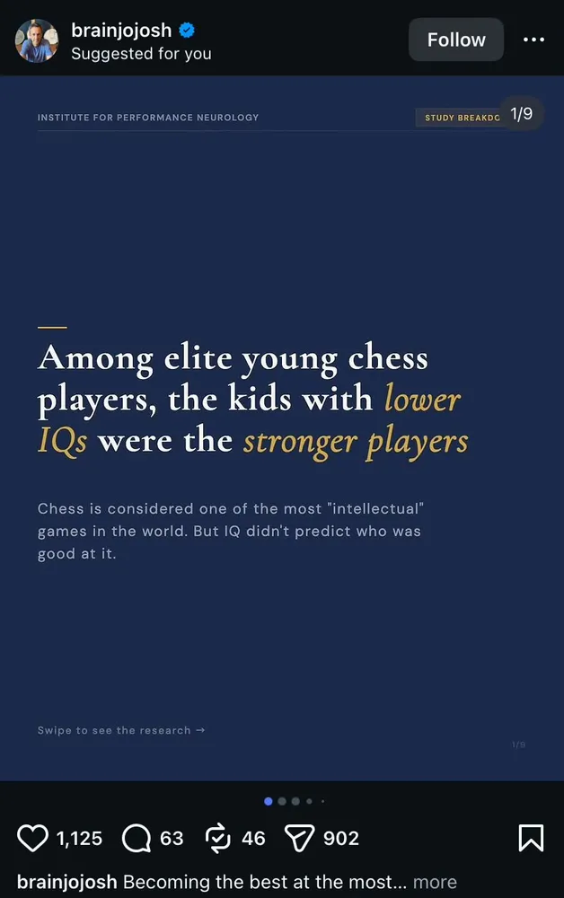
\[IQ \rightarrow Elite \leftarrow Chess Ability\]
In the general population, IQ and Chess Ability are likely positively correlated. However, Elite Status is determined by a combination of both. To be an “elite” young player, a child usually needs either extremely high natural IQ, extremely high technical chess skill, or a high combination of both.When you “zoom in” on only the elite group, you create a trade-off: if an elite player has a lower IQ, they must have exceptionally high technical chess ability to have made it into the elite group at all. This induces a spurious negative correlation within that specific sub-population.
17.3.4.2 Smoking and birthweight
See See Yerushalmy (1971) for the original claim that smoking improves birth weight, and Hernandez-Diaz, Schisterman, and Hernán (2006) for the later critique on the basis of collider bias.
17.3.4.3 The obesity paradox
In studies of patients with chronic diseases (like heart failure or end-stage renal disease), researchers often find that obese patients have better survival rates than those with “normal” BMIs.The DAG: \(Obesity \rightarrow Disease \leftarrow Unknown Protective Factors\)
By conditioning on having the disease and being alive, you compare people whose obesity likely contributed to the disease with people who developed the disease despite being “fit.” The thin people in the study likely have some other, much more aggressive risk factor (genetic, etc.) that led to their illness, making them more likely to die than the obese group.
See Banack and Kaufman (2013), “The Obesity Paradox: Understanding the Effect of Selection on Data Analysis.”
17.3.4.4 Smoking and COVID mortality
COVID-19 and the Smoking ParadoxEarly in the pandemic, several studies suggested that smokers were significantly less likely to be hospitalized with COVID-19, leading to wild theories about nicotine being protective.
The DAG: \(Smoking \rightarrow Hospitalization \leftarrow Severe COVID Symptoms\)
This was largely a result of collider stratification. Researchers were often looking at data from people already in the hospital or those who were tested because they had symptoms. If you condition on being in the hospital, and smoking causes you to be in the hospital for other reasons (like COPD or heart issues), then a smoker in the hospital is less likely to be there specifically because of severe COVID-19 compared to a non-smoker. See Griffith et al. (2020), “Collider bias undermines our understanding of COVID-19 disease risk and severity.”
17.3.4.5 Berkson’s Paradox / The ‘dumb jock’ stereotype
Imagine that in the general population of USA 18-year-olds, being good at sports and being good at math are not correlated at all (\(r = 0\)). There are plenty of people who are good at both, bad at both, or good at one and not the other.
However, an elite US university has a “cutoff” for admission. To get in (\(S = 1\)), you generally need to be:
- A “Genius” (High \(G\), even if low \(A\)).
- “Elite Athlete” (High \(A\), even if low \(G\)).
- A “Great All-Rounder” (Moderate \(A\) and Moderate \(G\)).
The Filter: The university rejects everyone who is low in both athleticism and academics.
Why the Stereotype Emerges: When you walk onto a university campus, you are only looking at the people who passed the filter (\(S = 1\)). By conditioning on the collider (Admission), you have removed the “Low-Low” quadrant of the population. This induces a spurious negative correlation - a collider bias. In the cafeteria, if you see someone who is a world-class athlete, the statistical probability that they are also an academic genius is lower than it is for the “average” student, because they didn’t need the genius-level grades to get past the admission filter—their sports ability already carried them over the line. Conversely, the “nerds” didn’t need to be able to throw a football to get in. This makes it look like you “sacrifice” one for the other, when in reality, the “dumb and non-athletic” people just aren’t on campus for you to see them.
Social groupings on campus may then replicate this pattern, with jocks and nerds socialising more within-group than between-groups. What began as a statistical artifact can become a social dynamic that influences friendships etc. This is an example of collider bias that may produce downstream real-world effects.
17.3.4.6 The Hollywood paradox
The stereotype that “beautiful actors can’t act” and “great actors aren’t conventionally attractive.”
In the general population, acting talent and physical attractiveness are completely independent traits—they aren’t biologically or socially linked.
- Talent (\(T\)): Technical acting skill.
- Attractiveness (\(A\)): Conventional physical beauty.
- Fame/Success (\(S\)): Whether someone is a working, famous actor.
The DAG is:\[Talent (T) \rightarrow Success (S) \leftarrow Attractiveness (A)\]
The Selection Logic: To become a famous actor, the industry usually requires you to pass a high “Success Threshold.” To get cast in major roles, you typically need to be:
- The “Gary Oldman”: Extremely high talent, regardless of conventional beauty standards.
- The “Model-Turned-Actor”: Extremely high attractiveness, even if acting talent is just “okay.”
- The “Leading Person”: A solid mix of both.
The Filter: People who have average talent and average attractiveness are almost never “successful” enough to be seen by the public. They are filtered out before they ever reach our screens.
The Resulting Bias: When you look at the pool of famous actors (\(S = 1\)), you are conditioning on the collider. This creates a negative correlation between talent and looks:
- If a famous actor is not particularly attractive, they must be a powerhouse of talent to have overcome the industry’s barriers. (The “Character Actor” effect).
- If a famous actor is not particularly talented, they must be exceptionally attractive to have been cast anyway. (The “Eye Candy” effect).
- Because you never see the millions of people who are both “plain-looking” and “bad at acting,” people create a heuristics that there is a trade-off, that one cannot have both. It feels like Mother Nature gave them one or the other, when in reality, the casting directors are the ones who enforced the “one or the other” rule through selection.
Again, this statistical artifact may produce actual (flawed) heuristics that people follow, making this have real world implications.
17.4 Range restrictions and standaridzed effect sizes as a selection effect
TODO